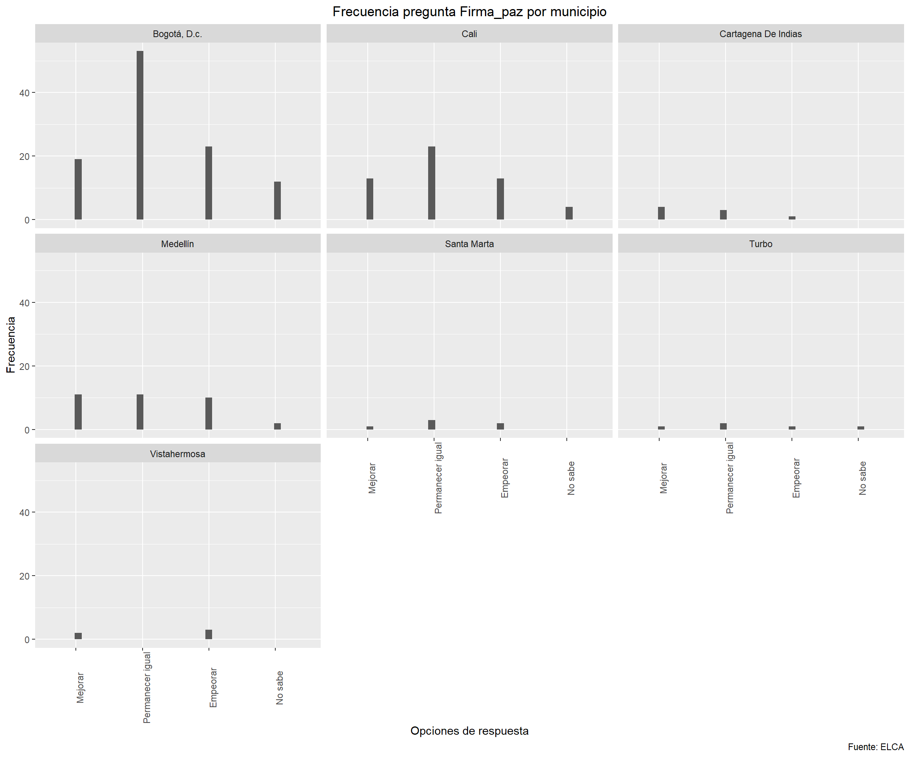
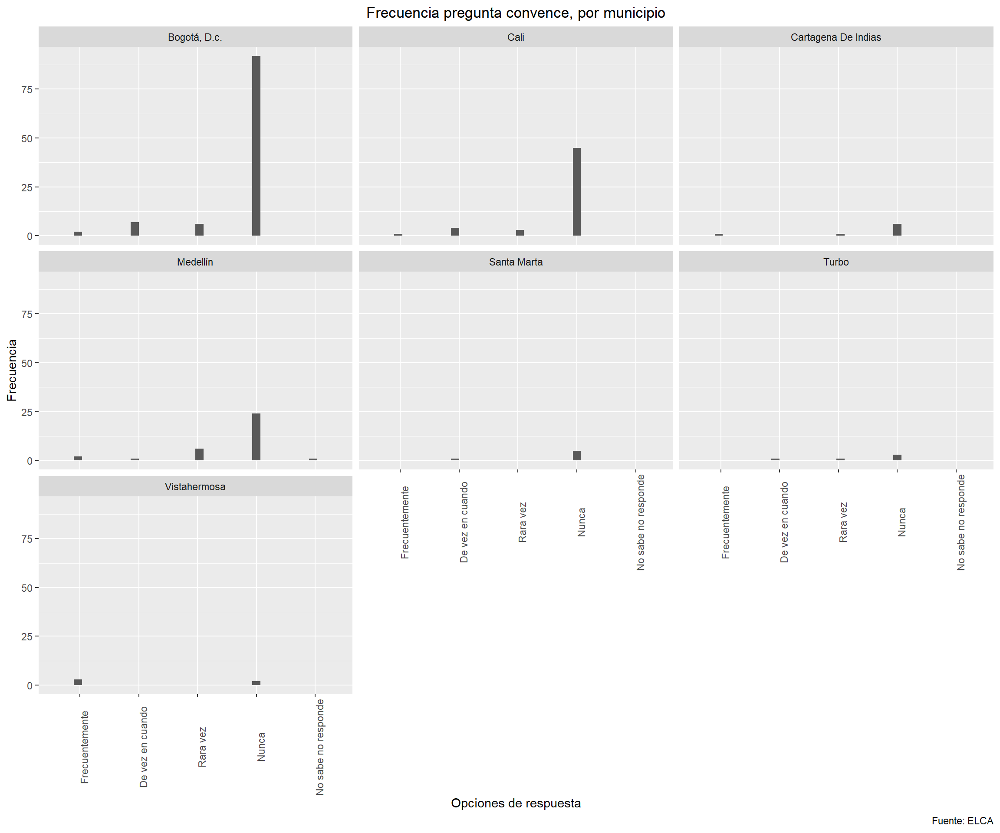
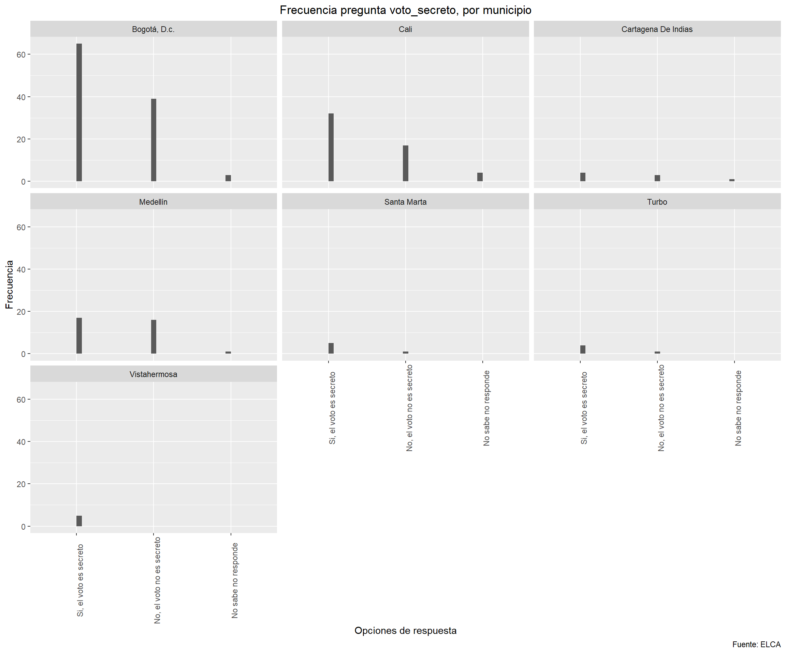
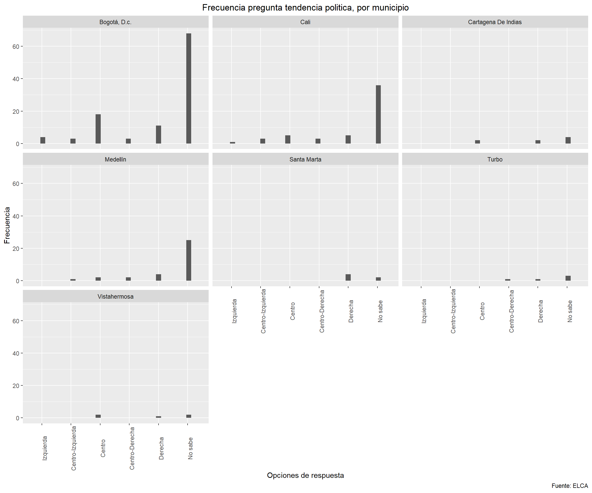

Aqui se muestran algunos analisis que se hacen sobre la encuesta de la ELCA2016 (ronda 3) y se relacionan con las preguntas del ACDIVOCA.
library(readstata13)
library(tidyr)
library(dplyr)
library(ggplot2)
library(data.table)
library(readxl)
library(doBy)
library(vtable)
library(plyr)
library(gridExtra)
library(grid)
library(purrr)
library(psych)
library(Hmisc)
library(matrixStats)
library(ggpubr)
library(vtable)
library(ggthemes)
library(httpuv)
library(janitor)rm(list=ls())
#Importar los datos de la base "Depuracion y Merge"
#load("C:/Users/felig/Dropbox/Proyecto Juan Camilo/MergeBases_Environment_ELCA.RData")
setwd("C:/Users/felig/Dropbox/Proyecto Juan Camilo")
elca2016_uchoques <- read.dta13("C:/Users/felig/Dropbox/Proyecto Juan Camilo/elca/ELCA 2016/Urbano/Bases/UChoques.dta",encoding="UTF-8", fromEncoding="latin1", convert.factors = TRUE,nonint.factors=TRUE, generate.factors = TRUE)
elca2016_ucomunidad <- read.dta13("C:/Users/felig/Dropbox/Proyecto Juan Camilo/elca/ELCA 2016/Urbano/Bases/Ucomunidades.dta",encoding="UTF-8", fromEncoding="latin1", convert.factors = TRUE,nonint.factors=TRUE, generate.factors = TRUE)
elca2016_ugastos <- read.dta13("C:/Users/felig/Dropbox/Proyecto Juan Camilo/elca/ELCA 2016/Urbano/Bases/Ugastos.dta",encoding="UTF-8", fromEncoding="latin1", convert.factors = TRUE,nonint.factors=TRUE, generate.factors = TRUE)
elca2016_uhogar <- read.dta13("C:/Users/felig/Dropbox/Proyecto Juan Camilo/elca/ELCA 2016/Urbano/Bases/Uhogar.dta",encoding="UTF-8", fromEncoding="latin1", convert.factors = TRUE,nonint.factors=TRUE, generate.factors = TRUE)
elca2016_upersonas <- read.dta13("C:/Users/felig/Dropbox/Proyecto Juan Camilo/elca/ELCA 2016/Urbano/Bases/Upersonas.dta",encoding="UTF-8", fromEncoding="latin1", convert.factors = TRUE,nonint.factors=TRUE, generate.factors = TRUE)El objetivo de estos analisis es ver como se comportan algunas variables del modulo de politica de la encuesta de la ELCA del 2016 con los indices PAR (o IMR)
Se debe hacer un analisis por hogar porque, por persona es mas dificil encontrar los municipios correspondientes. Para ello y, dado que la mayoria de las preguntas de la encuesta son categoricas, se cogio la moda de cada pregunta para asignar a ese hogar la mayoria de respuesta que tuvieran sus integrantes.
#Vamos a hacer el merge de las bases de datos para poder hacer los analisis correspondientes. Solo vamos a juntar las preguntas que nos interesan, es decir las del modulo de politica.
#Cortamos la base de datos
elca_politica2016 <- elca2016_upersonas %>%
select(c(1:20),c(591:644))
#elca2016_uhogar_merge <- elca2016_uhogar %>%
# select(c(1:16), c(ends_with("_imr"), c(ends_with(".mean"), c(ends_with(".sd")))))
elca_politica2016 <- merge(elca_politica2016,
elca2016_uhogar, by="llave")
#elca_politica2016 %<>% distinct(llave_n16, keep_all=T)
getmode <- function(v) {
uniqv <- unique(v)
uniqv[which.max(tabulate(match(v, uniqv)))]
}
ensayo <- elca_politica2016
#Agrupar por hogar y por municipio.
ensayo <- elca_politica2016 %>%
select(c(id_mpioU, llave, firma_paz, convence, tendencia_pol, voto_secreto)) %>%
dplyr::group_by(llave, id_mpioU) %>%
dplyr::summarise(firma_paz_hogar=getmode(firma_paz),
convence_hogar=getmode(convence),
tendencia_pol_hogar=getmode(tendencia_pol),
voto_secreto_hogar=getmode(voto_secreto)) %>%
na.omit()
ensayo$id_mpioU[ensayo$id_mpioU=="23102"] <- "Medellín"
ensayo$id_mpioU[ensayo$id_mpioU=="23010"] <- "Turbo"
ensayo$id_mpioU[ensayo$id_mpioU=="22015"] <- "Soledad"
ensayo$id_mpioU[ensayo$id_mpioU=="21102"] <- "Bogotá, D.c."
ensayo$id_mpioU[ensayo$id_mpioU=="20102"] <- "Cartagena De Indias"
ensayo$id_mpioU[ensayo$id_mpioU=="11102"] <- "Santa Marta"
ensayo$id_mpioU[ensayo$id_mpioU=="02102"] <- "Cali"
ensayo$id_mpioU[ensayo$id_mpioU=="10021"] <- "Vistahermosa"
ensayo$id_mpioU[ensayo$id_mpioU=="10102"] <- "Villavicencio"
ensayo$id_mpioU[ensayo$id_mpioU=="05040"] <- "Piedecuesta"
ensayo %<>% filter(id_mpioU=="Bogotá, D.c." | id_mpioU=="Cali" | id_mpioU=="Cartagena De Indias" | id_mpioU=="Medellín" | id_mpioU=="Santa Marta" | id_mpioU=="Turbo" | id_mpioU=="Soledad" | id_mpioU=="Villaciencio" | id_mpioU=="Vistahermosa") acdi_imr <- as.data.table(
read_excel("C:/Users/felig/Dropbox/Proyecto Juan Camilo/Documentos ACDIVOCA/7.IndiceReconciliacion_31oct2017.xlsx",sheet=2))
#Limpiar tildes y mayusculas de los nombres de las variables del indice IMR
acdi_imr <- acdi_imr %>% clean_names()
#Limpiar los otros nombres
acdi_imr <- acdi_imr %>% select(-c(20:21))
colnames(acdi_imr)[1] <- "Municipio"
colnames(acdi_imr)[15] <- "1-agresion"
#Limpirar nombre de Municipios para hacer el merge. Importante notar que solo se hacen estos 7 municipios porque estos tambien estan en la base de la ELCA.
acdi_imr$Municipio[acdi_imr$Municipio=="MEDELLIN"] <- "Medellín"
acdi_imr$Municipio[acdi_imr$Municipio=="TURBO"] <- "Turbo"
acdi_imr$Municipio[acdi_imr$Municipio=="BOGOTA, D.C."] <- "Bogotá, D.c."
acdi_imr$Municipio[acdi_imr$Municipio=="CARTAGENA"] <- "Cartagena De Indias"
acdi_imr$Municipio[acdi_imr$Municipio=="SANTA MARTA"] <- "Santa Marta"
acdi_imr$Municipio[acdi_imr$Municipio=="CALI"] <- "Cali"
acdi_imr$Municipio[acdi_imr$Municipio=="VISTAHERMOSA"] <- "Vistahermosa"
#Merge
merge_acdi_temp <- merge(ensayo, acdi_imr, by.x="id_mpioU",
by.y="Municipio",suffixes = c("","_imr"))
#Poner el sufijo
setnames(merge_acdi_temp,
paste0(names(merge_acdi_temp),
ifelse(names(merge_acdi_temp) %in% setdiff(names(acdi_imr),
names(ensayo)),"_imr","")))
merge_acdi_temp %<>% filter(!(cohesion_imr=="NA"))
merge_acdi <- merge_acdi_temp
rm(merge_acdi_temp)
#Asignarle los labels a los valores
merge_acdi$firma_paz_hogar_lab <- cut(as.numeric(merge_acdi$firma_paz_hogar), breaks=4, labels=c("Mejorar","Permanecer igual","Empeorar", "No sabe"))Luego de agrupar las variables por hogar y hacer el merge con el indice PAR del acdivoca, vamos a hacer algunos analisis descriptivos y algunas correlaciones.
A continuacion se hace la descripcion de las varibales que se pueden encontrar:
firma_paz_hogar: Cree usted que con la firma del acuerdo de paz con las FARC, su vida puede:
1 Mejorar
2 Permanecer igual
3 Empeorar
4 No sabe
convence_hogar: Durante las elecciones, alguna gente trata de convencer a otras para que voten por algun partido o candidato. ¿Con que frecuencia ha tratado usted de convencer a otros para que voten por un partido o candidato?
1 Frecuentemente
2 De vez en cuando
3 Rara vez
4 Nunca
5 No sabe /No responde
voto_secreto_hogar: ¿… cree que el voto es secreto o no es secreto?
1 Si, el voto es secreto
2 No, el voto no es secreto
3 No sabe/No responde
tendencia_pol_hogar:Con frecuencia se habla de tendencias politica de izquierda y de derecha. Segun el sentido que hagan para usted los terminos “izquierda” y “derecha”, ¿con que tendencia politica simpatiza usted?
1 Izquierda
2 Centro-izquierda
3 Centro
4 Centro-derecha
5 Derecha
6 No sabe
summary(merge_acdi)## id_mpioU llave firma_paz_hogar
## Length:218 Min. :11100101 Mejorar :51
## Class :character 1st Qu.:16115677 Permanecer igual:95
## Mode :character Median :17421652 Empeorar :53
## Mean :17371823 No sabe :19
## 3rd Qu.:19282426
## Max. :22600401
## convence_hogar tendencia_pol_hogar
## Frecuentemente : 9 Izquierda : 5
## De vez en cuando : 14 Centro-izquierda: 7
## Rara vez : 17 Centro : 29
## Nunca :177 Centro-derecha : 9
## No sabe o No responde: 1 Derecha : 28
## No sabe :140
## voto_secreto_hogar culpa_imr restauracion_imr
## Si, el voto es secreto :132 Min. :0.6899 Min. :0.4997
## No, el voto no es secreto: 77 1st Qu.:0.7556 1st Qu.:0.5125
## No sabe o no responde : 9 Median :0.7556 Median :0.5473
## Mean :0.7626 Mean :0.5462
## 3rd Qu.:0.7729 3rd Qu.:0.5473
## Max. :0.9305 Max. :0.6260
## arrepentimiento_imr dialogo_propositivo_imr aporte_reconciliacion_imr
## Min. :0.4821 Min. :0.3086 Min. :0.3086
## 1st Qu.:0.5215 1st Qu.:0.4386 1st Qu.:0.3367
## Median :0.5215 Median :0.4386 Median :0.3733
## Mean :0.5494 Mean :0.4362 Mean :0.3678
## 3rd Qu.:0.5429 3rd Qu.:0.5043 3rd Qu.:0.3733
## Max. :0.6700 Max. :0.5181 Max. :0.4754
## resiliencia_imr reconocimiento_imr tolerancia_imr cooperacion_imr
## Min. :0.7079 Min. :0.4492 Min. :0.5779 Min. :0.7156
## 1st Qu.:0.7275 1st Qu.:0.4492 1st Qu.:0.6000 1st Qu.:0.7156
## Median :0.7275 Median :0.4870 Median :0.8190 Median :0.7231
## Mean :0.7370 Mean :0.4807 Mean :0.7277 Mean :0.7627
## 3rd Qu.:0.7419 3rd Qu.:0.4906 3rd Qu.:0.8190 3rd Qu.:0.8307
## Max. :0.8545 Max. :0.6815 Max. :0.9287 Max. :0.9621
## cohesion_imr confianza_imr seguridad_imr reclamo_imr
## Min. :0.4317 Min. :0.2516 Min. :0.4631 Min. :0.6052
## 1st Qu.:0.4741 1st Qu.:0.4221 1st Qu.:0.4631 1st Qu.:0.8884
## Median :0.4741 Median :0.4221 Median :0.5214 Median :0.9037
## Mean :0.4800 Mean :0.3911 Mean :0.5184 Mean :0.8383
## 3rd Qu.:0.4968 3rd Qu.:0.4302 3rd Qu.:0.5381 3rd Qu.:0.9037
## Max. :0.5694 Max. :0.4718 Max. :0.6801 Max. :0.9733
## 1-agresion_imr disculpas_imr argumentar_imr escuchar_imr
## Min. :0.04847 Min. :0.5850 Min. :0.5352 Min. :0.5514
## 1st Qu.:0.10991 1st Qu.:0.5850 1st Qu.:0.5352 1st Qu.:0.5807
## Median :0.10991 Median :0.7069 Median :0.5478 Median :0.5807
## Mean :0.16660 Mean :0.6576 Mean :0.5487 Mean :0.5994
## 3rd Qu.:0.26386 3rd Qu.:0.7234 3rd Qu.:0.5479 3rd Qu.:0.6506
## Max. :0.35877 Max. :0.7992 Max. :0.6620 Max. :0.6762
## indice_de_reconciliacion_imr firma_paz_hogar_lab
## Min. :0.3908 Mejorar :51
## 1st Qu.:0.4260 Permanecer igual:95
## Median :0.4260 Empeorar :53
## Mean :0.4382 No sabe :19
## 3rd Qu.:0.4472
## Max. :0.6584Recuerde que estos analisis estan hechos por hogar. Por lo tanto, observe que hay 5 hogares que simpatizan con la tendencia politica de la izquierda, 28 hogares que simpatizan con la tendencia politica de derecha. Por otro lado, hay 51 hogares que creen que su vida va a mejorar con el proceso de paz con las FARC, hay 53 que creen que el sus vidas van a empeorar gracias al proceso de paz. Asimismo, hay 9 hogares que que han tratado frecuentemente de convencer a los otros de votar por algun partido politico, mientras que 177 hogares nunca lo han hecho.
Cree usted que con la firma del acuerdo de paz con las FARC, su vida puede:
1 Mejorar
2 Permanecer igual
3 Empeorar
4 No sabe
merge_acdi %>%
ggplot(aes(x=as.numeric((firma_paz_hogar)))) +
geom_histogram()+
facet_wrap(~id_mpioU)+
labs(y='Frecuencia', title='Frecuencia pregunta Firma_paz por municipio',
x= 'Opciones de respuesta', caption="Fuente: ELCA") +
theme(plot.title = element_text(hjust = 0.5), axis.text.x = element_text(angle=90))+
scale_x_discrete(limits=c("Mejorar",
"Permanecer igual",
"Empeorar","No sabe"))
Durante las elecciones, alguna gente trata de convencer a otras para que voten por algun partido o candidato. ¿Con que frecuencia ha tratado usted de convencer a otros para que voten por un partido o candidato?
1 Frecuentemente
2 De vez en cuando
3 Rara vez
4 Nunca
5 No sabe /No responde
merge_acdi %>%
ggplot(aes(x=as.numeric((convence_hogar)))) +
geom_histogram()+
facet_wrap(~id_mpioU)+
labs(y='Frecuencia', title='Frecuencia pregunta convence, por municipio',
x= 'Opciones de respuesta', caption="Fuente: ELCA") +
theme(plot.title = element_text(hjust = 0.5), axis.text.x = element_text(angle=90))+
scale_x_discrete(limits=c("Frecuentemente",
"De vez en cuando",
"Rara vez",
"Nunca",
"No sabe no responde"))
¿… cree que el voto es secreto o no es secreto?
1 Si, el voto es secreto
2 No, el voto no es secreto
3 No sabe/No responde
merge_acdi %>%
ggplot(aes(x=as.numeric((voto_secreto_hogar)))) +
geom_histogram()+
facet_wrap(~id_mpioU)+
labs(y='Frecuencia', title='Frecuencia pregunta voto_secreto, por municipio',
x= 'Opciones de respuesta', caption="Fuente: ELCA") +
theme(plot.title = element_text(hjust = 0.5), axis.text.x = element_text(angle=90))+
scale_x_discrete(limits=c("Si, el voto es secreto",
"No, el voto no es secreto",
"No sabe no responde"))
Con frecuencia se habla de tendencias politica de izquierda y de derecha. Segun el sentido que hagan para usted los terminos “izquierda” y “derecha”, ¿con que tendencia politica simpatiza usted?
1 Izquierda
2 Centro-izquierda
3 Centro
4 Centro-derecha
5 Derecha
6 No sabe
merge_acdi %>%
ggplot(aes(x=as.numeric((tendencia_pol_hogar)))) +
geom_histogram()+
facet_wrap(~id_mpioU)+
labs(y='Frecuencia', title='Frecuencia pregunta tendencia politica, por municipio',
x= 'Opciones de respuesta', caption="Fuente: ELCA") +
theme(plot.title = element_text(hjust = 0.5), axis.text.x = element_text(angle=90))+
scale_x_discrete(limits=c("Izquierda",
"Centro-Izquierda",
"Centro",
"Centro-Derecha",
"Derecha",
"No sabe"))
A continuacion haremos correlacions de estos items con algunas preguntas del indice PAR. Note que las respuestas de “no sabe, no responde” tienen un peso alto por lo que, a la hora de hacer los analisis se van a quitar para que no sesguen los resultado.
merge_corr <- merge_acdi %>%
filter(!(firma_paz_hogar=="No sabe")) %>%
filter(!(convence_hogar=="No sabe o No responde"))
merge_corr %<>% filter(!(tendencia_pol_hogar=="No sabe"))
merge_corr %<>% filter(!(voto_secreto_hogar=="No sabe o no responde"))
correlaciones <- cbind(as.numeric(merge_corr$firma_paz_hogar),
as.numeric(merge_corr$convence_hogar),
as.numeric(merge_corr$tendencia_pol_hogar),
as.numeric(merge_corr$voto_secreto_hogar),
merge_corr$restauracion_imr,
merge_corr$resiliencia_imr,
merge_corr$reconocimiento_imr,
merge_corr$indice_de_reconciliacion_imr,
merge_corr$confianza_imr
)
nombres <- c("Firma_paz",
"Convencer_votar",
"Tendencia_politica",
"Voto_secreto",
"Restauracion_imr",
"resiliencia_imr",
"reconocimiento_imr",
"indice_reconciliacion_imr",
"confianza_imr")
colnames(correlaciones) <- nombres
rcorr(correlaciones, type="spearman")## Firma_paz Convencer_votar Tendencia_politica
## Firma_paz 1.00 0.30 0.02
## Convencer_votar 0.30 1.00 -0.04
## Tendencia_politica 0.02 -0.04 1.00
## Voto_secreto 0.25 0.24 -0.29
## Restauracion_imr -0.03 -0.06 0.07
## resiliencia_imr -0.20 -0.09 -0.18
## reconocimiento_imr -0.04 -0.28 0.29
## indice_reconciliacion_imr 0.03 -0.18 0.25
## confianza_imr 0.09 0.18 -0.02
## Voto_secreto Restauracion_imr resiliencia_imr
## Firma_paz 0.25 -0.03 -0.20
## Convencer_votar 0.24 -0.06 -0.09
## Tendencia_politica -0.29 0.07 -0.18
## Voto_secreto 1.00 -0.01 -0.03
## Restauracion_imr -0.01 1.00 -0.47
## resiliencia_imr -0.03 -0.47 1.00
## reconocimiento_imr -0.21 0.01 0.03
## indice_reconciliacion_imr -0.15 0.68 -0.41
## confianza_imr 0.07 -0.84 0.25
## reconocimiento_imr indice_reconciliacion_imr
## Firma_paz -0.04 0.03
## Convencer_votar -0.28 -0.18
## Tendencia_politica 0.29 0.25
## Voto_secreto -0.21 -0.15
## Restauracion_imr 0.01 0.68
## resiliencia_imr 0.03 -0.41
## reconocimiento_imr 1.00 0.49
## indice_reconciliacion_imr 0.49 1.00
## confianza_imr -0.10 -0.64
## confianza_imr
## Firma_paz 0.09
## Convencer_votar 0.18
## Tendencia_politica -0.02
## Voto_secreto 0.07
## Restauracion_imr -0.84
## resiliencia_imr 0.25
## reconocimiento_imr -0.10
## indice_reconciliacion_imr -0.64
## confianza_imr 1.00
##
## n= 70
##
##
## P
## Firma_paz Convencer_votar Tendencia_politica
## Firma_paz 0.0120 0.8665
## Convencer_votar 0.0120 0.7185
## Tendencia_politica 0.8665 0.7185
## Voto_secreto 0.0377 0.0428 0.0161
## Restauracion_imr 0.8338 0.6383 0.5648
## resiliencia_imr 0.0990 0.4494 0.1414
## reconocimiento_imr 0.7398 0.0189 0.0136
## indice_reconciliacion_imr 0.8056 0.1272 0.0373
## confianza_imr 0.4423 0.1279 0.8881
## Voto_secreto Restauracion_imr resiliencia_imr
## Firma_paz 0.0377 0.8338 0.0990
## Convencer_votar 0.0428 0.6383 0.4494
## Tendencia_politica 0.0161 0.5648 0.1414
## Voto_secreto 0.9643 0.8033
## Restauracion_imr 0.9643 0.0000
## resiliencia_imr 0.8033 0.0000
## reconocimiento_imr 0.0872 0.9226 0.8057
## indice_reconciliacion_imr 0.2200 0.0000 0.0004
## confianza_imr 0.5521 0.0000 0.0363
## reconocimiento_imr indice_reconciliacion_imr
## Firma_paz 0.7398 0.8056
## Convencer_votar 0.0189 0.1272
## Tendencia_politica 0.0136 0.0373
## Voto_secreto 0.0872 0.2200
## Restauracion_imr 0.9226 0.0000
## resiliencia_imr 0.8057 0.0004
## reconocimiento_imr 0.0000
## indice_reconciliacion_imr 0.0000
## confianza_imr 0.3973 0.0000
## confianza_imr
## Firma_paz 0.4423
## Convencer_votar 0.1279
## Tendencia_politica 0.8881
## Voto_secreto 0.5521
## Restauracion_imr 0.0000
## resiliencia_imr 0.0363
## reconocimiento_imr 0.3973
## indice_reconciliacion_imr 0.0000
## confianza_imrObserve que aqui, a pesar de que no hay ninguna correlacion que sea positiva hay ciertas cosas que pueden ser interesantes de discutir. Por un lado, observe las correlaciones entre la variable Firma_paz y los indices PAR. Recuerde que la variable firma_paz, a menor numero mayor es el bienestar que creen las personas que traera la firma de la paz con las FARC para sus vidas. Firma_paz_:Observe que entre la variable firma_paz y la variable resiliencia_imr hay una correlacion negativa de 0.20. Esto lo que quiere decir es que son inversamente proporcionales. A mayor resiliencia, menor puntaje en la variable firma_paz. Esto indica que, a mayor resiliencia, mayor es la creencia que la firma del acuerdo traera bienestar. Es interesante ver esto porque parece ser coherente. Las personas resilientes suelven ver con optimismo el futuro y suelen olvidar los danos del pasado y creen en un futuro prospero. Lo que vemos aqui es que las personas resilientes ven en el acuerdo de las FARC una posibilidad, un futuro prospero.
Convencer_votar_:Por otro lado, la variable convencer_votar, la cual indica que, a menor valor, mayor es la intencion de convencer a las personas de votar por un partido. Las correlaciones muestran un valor negativo con las variables indice_reconciliacion y reconomiciento. Esto quiere decir que a mayor indice de reconciliacion, mayor sera la influencia (o el empoderamiento) de las personas sobre sus cercanos o sobre su comunidad.
Tendencia_politica_:Esta variable, a mayor valor mas de derecha se considera la persona. Observe que aqui hay una relacion positiva reconocimiento_imr y indice_reconciliacion_imr. Esto indica que entre mas la persona se sienta que pertenece a un partido politico de derecha mayor indice de reconciliacion tendra o reconocimiento.
Voto_secreto: Esta variable, como es dicotomica no se puede interpretear de la misma forma que las otras. Por esta razon se decide omitir. ### Regresion lineal
dfcorrelaciones <- as.data.frame(correlaciones)
regReconcililacion <- lm(indice_reconciliacion_imr ~ correlaciones[,1:4], data=dfcorrelaciones)
summary(regReconcililacion)##
## Call:
## lm(formula = indice_reconciliacion_imr ~ correlaciones[, 1:4],
## data = dfcorrelaciones)
##
## Residuals:
## Min 1Q Median 3Q Max
## -0.096284 -0.039333 -0.011816 0.003351 0.226488
##
## Coefficients:
## Estimate Std. Error t value
## (Intercept) 0.447729 0.049360 9.071
## correlaciones[, 1:4]Firma_paz 0.005500 0.011743 0.468
## correlaciones[, 1:4]Convencer_votar -0.013621 0.009342 -1.458
## correlaciones[, 1:4]Tendencia_politica 0.014004 0.007336 1.909
## correlaciones[, 1:4]Voto_secreto -0.008890 0.018881 -0.471
## Pr(>|t|)
## (Intercept) 3.72e-13 ***
## correlaciones[, 1:4]Firma_paz 0.6411
## correlaciones[, 1:4]Convencer_votar 0.1496
## correlaciones[, 1:4]Tendencia_politica 0.0607 .
## correlaciones[, 1:4]Voto_secreto 0.6393
## ---
## Signif. codes: 0 '***' 0.001 '**' 0.01 '*' 0.05 '.' 0.1 ' ' 1
##
## Residual standard error: 0.06956 on 65 degrees of freedom
## Multiple R-squared: 0.1038, Adjusted R-squared: 0.04864
## F-statistic: 1.882 on 4 and 65 DF, p-value: 0.1242regRestauracion <- lm(Restauracion_imr ~ correlaciones[,1:4], data=dfcorrelaciones)
summary(regRestauracion)##
## Call:
## lm(formula = Restauracion_imr ~ correlaciones[, 1:4], data = dfcorrelaciones)
##
## Residuals:
## Min 1Q Median 3Q Max
## -0.054905 -0.026109 0.003472 0.005795 0.082353
##
## Coefficients:
## Estimate Std. Error t value
## (Intercept) 0.5347214 0.0253640 21.082
## correlaciones[, 1:4]Firma_paz -0.0009469 0.0060345 -0.157
## correlaciones[, 1:4]Convencer_votar -0.0010770 0.0048004 -0.224
## correlaciones[, 1:4]Tendencia_politica 0.0043792 0.0037699 1.162
## correlaciones[, 1:4]Voto_secreto 0.0010909 0.0097021 0.112
## Pr(>|t|)
## (Intercept) <2e-16 ***
## correlaciones[, 1:4]Firma_paz 0.876
## correlaciones[, 1:4]Convencer_votar 0.823
## correlaciones[, 1:4]Tendencia_politica 0.250
## correlaciones[, 1:4]Voto_secreto 0.911
## ---
## Signif. codes: 0 '***' 0.001 '**' 0.01 '*' 0.05 '.' 0.1 ' ' 1
##
## Residual standard error: 0.03574 on 65 degrees of freedom
## Multiple R-squared: 0.02269, Adjusted R-squared: -0.03746
## F-statistic: 0.3772 on 4 and 65 DF, p-value: 0.8241regconfianza <- lm(confianza_imr ~ correlaciones[,1:4], data=dfcorrelaciones)
summary(regconfianza)##
## Call:
## lm(formula = confianza_imr ~ correlaciones[, 1:4], data = dfcorrelaciones)
##
## Residuals:
## Min 1Q Median 3Q Max
## -0.154383 0.003028 0.016737 0.029531 0.107522
##
## Coefficients:
## Estimate Std. Error t value
## (Intercept) 0.351983 0.045192 7.789
## correlaciones[, 1:4]Firma_paz 0.002231 0.010752 0.207
## correlaciones[, 1:4]Convencer_votar 0.015287 0.008553 1.787
## correlaciones[, 1:4]Tendencia_politica -0.005293 0.006717 -0.788
## correlaciones[, 1:4]Voto_secreto 0.003679 0.017287 0.213
## Pr(>|t|)
## (Intercept) 6.93e-11 ***
## correlaciones[, 1:4]Firma_paz 0.8363
## correlaciones[, 1:4]Convencer_votar 0.0786 .
## correlaciones[, 1:4]Tendencia_politica 0.4335
## correlaciones[, 1:4]Voto_secreto 0.8321
## ---
## Signif. codes: 0 '***' 0.001 '**' 0.01 '*' 0.05 '.' 0.1 ' ' 1
##
## Residual standard error: 0.06369 on 65 degrees of freedom
## Multiple R-squared: 0.07063, Adjusted R-squared: 0.01344
## F-statistic: 1.235 on 4 and 65 DF, p-value: 0.3048regresiliencia <- lm(resiliencia_imr ~ correlaciones[,1:4], data=dfcorrelaciones)
summary(regresiliencia)##
## Call:
## lm(formula = resiliencia_imr ~ correlaciones[, 1:4], data = dfcorrelaciones)
##
## Residuals:
## Min 1Q Median 3Q Max
## -0.044820 -0.018991 -0.009060 0.000244 0.126568
##
## Coefficients:
## Estimate Std. Error t value
## (Intercept) 0.7984160 0.0264510 30.185
## correlaciones[, 1:4]Firma_paz -0.0042672 0.0062931 -0.678
## correlaciones[, 1:4]Convencer_votar -0.0116472 0.0050061 -2.327
## correlaciones[, 1:4]Tendencia_politica -0.0002012 0.0039314 -0.051
## correlaciones[, 1:4]Voto_secreto -0.0053129 0.0101179 -0.525
## Pr(>|t|)
## (Intercept) <2e-16 ***
## correlaciones[, 1:4]Firma_paz 0.5001
## correlaciones[, 1:4]Convencer_votar 0.0231 *
## correlaciones[, 1:4]Tendencia_politica 0.9593
## correlaciones[, 1:4]Voto_secreto 0.6013
## ---
## Signif. codes: 0 '***' 0.001 '**' 0.01 '*' 0.05 '.' 0.1 ' ' 1
##
## Residual standard error: 0.03728 on 65 degrees of freedom
## Multiple R-squared: 0.1169, Adjusted R-squared: 0.06257
## F-statistic: 2.151 on 4 and 65 DF, p-value: 0.0844regreconocimiento <- lm(reconocimiento_imr ~ correlaciones[,1:4], data=dfcorrelaciones)
summary(regreconocimiento)##
## Call:
## lm(formula = reconocimiento_imr ~ correlaciones[, 1:4], data = dfcorrelaciones)
##
## Residuals:
## Min 1Q Median 3Q Max
## -0.06941 -0.02933 -0.01617 0.01200 0.17384
##
## Coefficients:
## Estimate Std. Error t value
## (Intercept) 0.454771 0.039617 11.479
## correlaciones[, 1:4]Firma_paz 0.010989 0.009425 1.166
## correlaciones[, 1:4]Convencer_votar -0.009610 0.007498 -1.282
## correlaciones[, 1:4]Tendencia_politica 0.015632 0.005888 2.655
## correlaciones[, 1:4]Voto_secreto -0.008819 0.015154 -0.582
## Pr(>|t|)
## (Intercept) < 2e-16 ***
## correlaciones[, 1:4]Firma_paz 0.24791
## correlaciones[, 1:4]Convencer_votar 0.20450
## correlaciones[, 1:4]Tendencia_politica 0.00997 **
## correlaciones[, 1:4]Voto_secreto 0.56261
## ---
## Signif. codes: 0 '***' 0.001 '**' 0.01 '*' 0.05 '.' 0.1 ' ' 1
##
## Residual standard error: 0.05583 on 65 degrees of freedom
## Multiple R-squared: 0.1564, Adjusted R-squared: 0.1044
## F-statistic: 3.012 on 4 and 65 DF, p-value: 0.02422_indice_reconciliacion_imr: Observe que en la regresion lineal, esta variable es marginalmente significativa con la tendencia politica. Es decir, si sube un punto de la tendencia politica (ser mas de derecha) el indice de reconciliacion aumenta en 0.014 unidades. Esto nos muestra la misma informacion que la correlacion.
Restauracion_imr: Aqui no hay resultados lo suficientemente llamativos como para hacer una interpretacion o un comentario.
confianza_imr: Observe que en la regresion lineal, esta variable es marginalmente significativa con convencer_votar. Esta relacion es positiva, lo que quiere decir que, si aumenta en un punto la variable convencer_votar (es decir que las personas son menos propensas a convencer a los otros de votar) mayor sera la confianza que tienene.
resiliencia_imr: Observe que en la regresion lineal, esta variable es marginalmente significativa con convencer_votar. Esta relacion es negativa y sifgnificativa, lo que quiere decir que, si aumenta en un punto la variable convencer_votar (es decir que las personas son menos propensas a convencer a los otros de votar) la resiliencia de las personas disminuye. Aqui hay una relacion interesante ya que indica que el no querer compartir las ideologias politicas o no sentirse seguro con las convicciones politicas tiene una influenica sobre la resiliencia.
reconocimiento_imr: Observe que en la regresion lineal, esta variable es marginalmente significativa con tendencia politica. Esta relaciona es positivia lo que indica que si aumenta en un punto la tendencia politica (acercarse mas a las ideologias de derecha) el indice de reconocimiento va a aumentar en 0.015 unidades.
#Guardar bsae de datos.